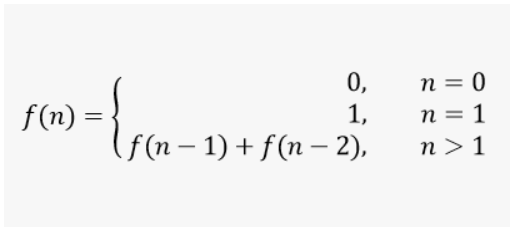

Listas de Exercício
-
Lista de Exercício - Linguagem/Operadores/Estruturas de Controle/Aritmetica
-
Construa um programa que leia do console 3 números inteiros, e imprima o resultado em ordem crescente
-
Construa um programa que leia a partir do console a idade de uma pessoa expressa em anos, meses e dias e
imprima no console a idade expressa apenas em dias
-
Construa um programa que leia a partir do console as 3 notas de um aluno e calcule a média final deste aluno,
considerando média aritmética simples
-
Construa um programa que leia a partir do console as 3 notas de um aluno e calcule a média final deste aluno.
Considerar que a média é ponderada e que o peso das notas são 2,3 e 5, respectivamente
-
Construa um programa que calcule a média aritmética das 3 notas de um aluno e mostre, além do valor da média,
uma mensagem de "Aprovado", caso a média seja igual ou superior a 6, ou a mensagem "reprovado", caso contrário.
Ao invés de ler as notas do console, sorteie (randomicamente) valores inteiros de 1 a 10
-
Elaborar um programa que lê 2 números e imprime a mensagem: "São múltiplos" ou "Não são múltiplos“
-
Construa um programa que imprime os números de 1 a 50 em ordem crescente e também em ordem decrescente
-
Construa um programa que imprime apenas os números pares entre 1 a 50
-
Construa um programa que leia dois números inteiros, X e Y, e mostre o resultado de X elevado a potência Y
-
Construa um programa que sorteie um número entre 1 e 20 e retorne o Fatorial do mesmo
-
Construa um programa para ler do console um número e informar se o mesmo é “Primo”
-
Escreva um programa que calcule o valor de H, sendo que ele é determinado pela série
H = 1/1 + 3/2 + 5/3 + 7/4 + ... + 99/50
-
Dado a série infinita X = 1 + 1/2 + 1/4 + ..., calcule o valor da série até atingir a precisão de 0,001.
A precisão é alcançada quando a diferença entre uma iteração e outra é inferior a precisão desejada.
Exiba o resultado da soma e a quantidade de iterações. Posteriormente aumenta a precisão para
0,000001 e compare o resultado
-
Calcule o famoso número PI através da série infinita descoberta pelo grande matemático Leibniz, conforme a formula
Pi/4 = 1 - 1/3 + 1/5 - 1/7 + ... . Calcule com precisão 0,01 e depois aumente a precisão para 0,0001
-
Construa um programa para calcular o fatorial de um número inteiro positivo. Utilize um algoritmo recursivo
-
Faça um programa que popule um array de 100 posições com valores aleatórios entre 1 e 100, pesquise um número
(definido também aleatoriamente) dentro do array e caso encontre o número desejado, imprima a posição que o
mesmo se encontra ou informe que o mesmo não existe. Exiba também o tempo de processamento em milissegundos
-
Construa um programa que gerencie a tabela do campeonato brasileiro. A tabela deverá manter as seguintes
informações: Nome do time, número de vitórias, empates e derrotas, gols prós, gols contras e a pontuação.
Considere que uma vitória vale 3 pontos e um empate vale 1 ponto. Permita que o usuário acrescente jogos,
informando o nome dos times e quantidade de gols de cada time na partida
-
Construa um algoritmo para exibir os números da série de Fibonacci

-
Construa um programa que crie 2 matrizes de ordem 3 (3 linhas e 3 colunas), a partir de valores inteiros
aleatórios entre 0 e 100 e imprima no console a soma e subtração das mesmas
-
O produto de 2 matrizes AxB é possível quando a quantidade de colunas da matriz A é igual a quantidade de
linhas da matriz B. Faça um programa que crie aleatoriamente duas matrizes possíveis de serem multiplicadas e
imprima no console o resultado
-
A Pilha é uma estrutura de dados do tipo FILO (first in last out – primeiro a entrar é o último a sair).
Implemente em Java usando vetor uma estrutura de pilha com 3 métodos: push (inclui um item na pilha) e pop
(remover um item da pilha)
-
Lista de Exercício - OO
-
Modele uma classe que represente um ponto geométrico em duas dimensões. Um ponto pode ser
representado pelas suas coordenadas x e y. Considere a questão do “encapsulamento”, ou seja, não
exponha diretamente os atributos da classe, mas forneça métodos públicos para que outros objetos possam
ler e atualizar estes atributos.
- Quantos construtores a sua classe possui?
- Qual a superclasse do classe Ponto?
- A sua classe possui uma representação como String? Qual?
-
Sobrescreva o método equals(Object) para definir o que seria igualdade semântica entre duas instâncias
de Ponto.
- Acrescente a capacidade de clonagem na classe Ponto.
-
Acrescente um método com a seguinte assinatura: public float distancia(Ponto). Este método deverá
retornar a distância entre o ponto que está executando o método distancia e o ponto passado como parâmetro
- Modele uma classe que represente um ponto geométrico tridimensional como uma especialização da classe Ponto
- Modele uma classe que represente um ponto Colorido
- Como controlar a quantidade de instâncias da classe Ponto?
-
Modele uma estrutura de classes para representar Contas Bancárias. Uma conta possui um número e um saldo,
e também as seguintes operações:
- void deposita(valor)
- void retira(valor)
- void transfere(valor, contaDestino)
- double saldo()
- void extrato() /* imprimindo no console com System.out.println() */
-
Construa uma classe Estatística com capacidades de calcular médias aritmética e ponderada, calcular
somas e produtórios de um conjunto de valores inteiros ou em ponto flutuante. Faça isto com um conjunto
de métodos estáticos, ou seja, onde não é necessário instanciar um objeto para acionar estes métodos